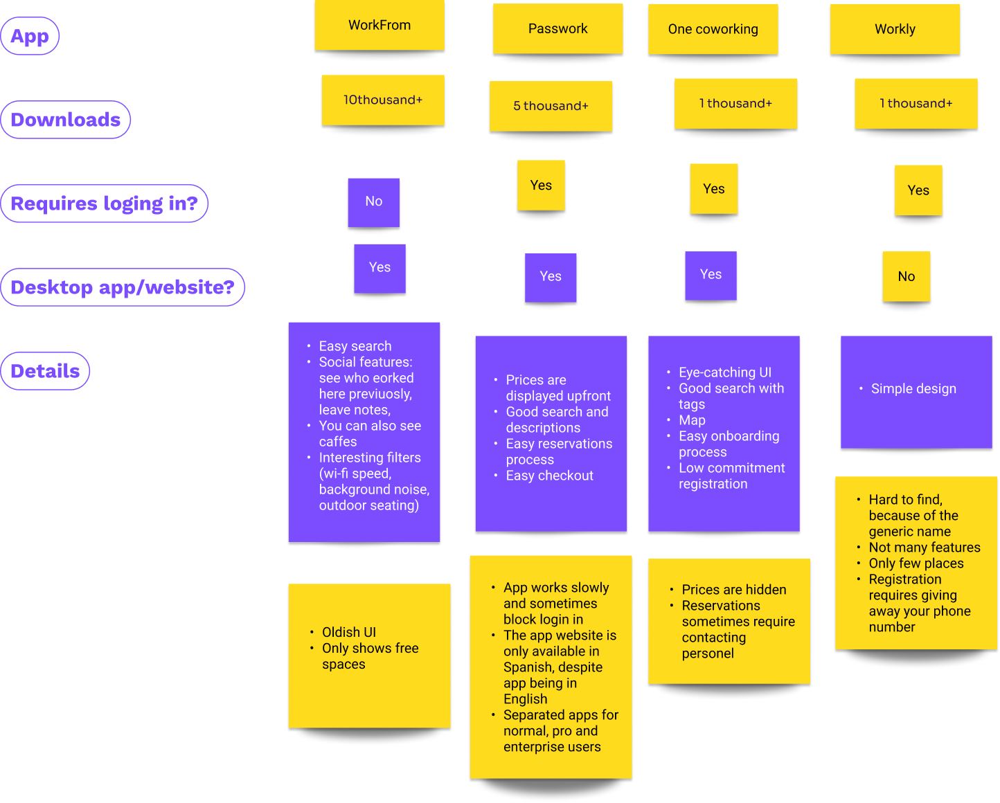
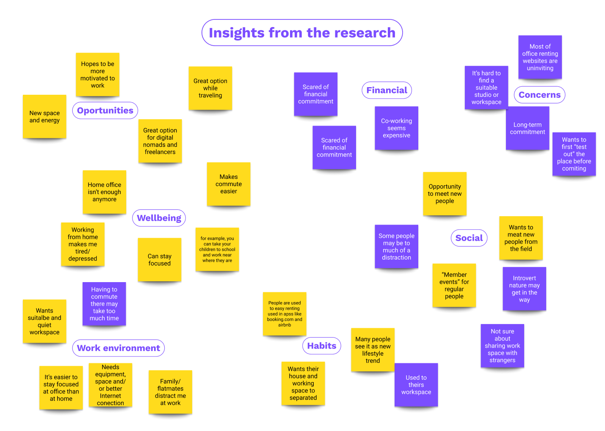
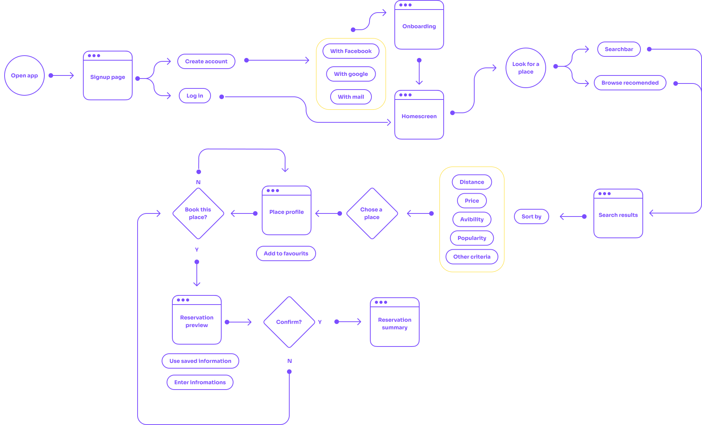
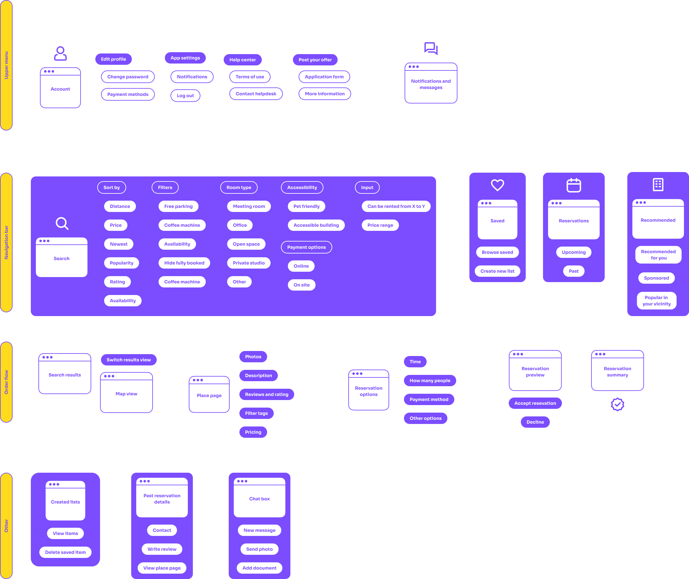
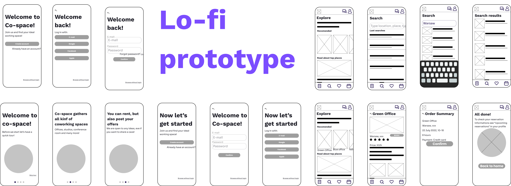
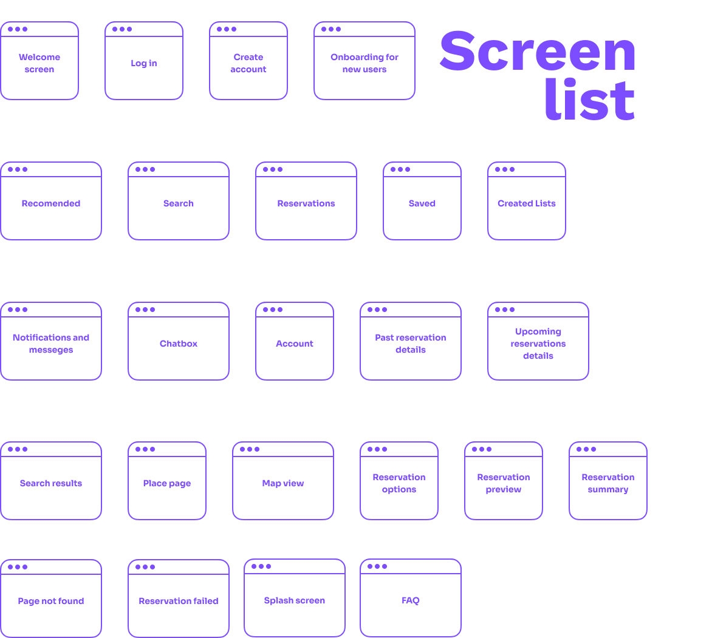
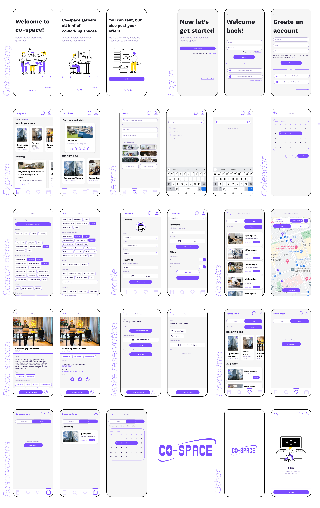

Co-space
Project overview
What is this app about?
The app is designed to help people find and schedule places to work remotely from. Main functionalities include searching and sorting by distance and other criteria, setting price ranges. The app ensures flexibility for its users and makes booking and search much shorter.
Role and tools?
The alpha and omega
Why such an app?
The idea for this project came up to me when I was browsing social media. Many people were looking for a mate to share co-working or studio with. After the pandemic, many companies switched to remote model of work, thus many people started working from home. For many this is a big problem, because of many reasons like noisy flatmates or lack of proper space and equipment. Co-working became very popular in no time.
Steps
Here's a quick glance at what will you find in this case study. Pay extra attention to the final design!
Discover
Problem
There are of course sites and apps similar in nature, but lack usability and essential features. Every place usually has a unique website, and individuals that are looking for someone to share space with usually advertise on social media. The is no app to gather all the offers from companies and individuals. An app like this would make the search and booking much faster and simpler.
Solution
Research and design a scheduling app for co-working and find out about the most desirable features.
Hypotheses and questions
Before starting the process, I have come up with few hypotheses. They were my guidance in the project.
Based on those, I knew what to look for while doing desk research.
Competitive analyze
Based on that we learned that:
- Most of them are rather unpopular.
- Some gathered only paid options, other only free ones
- All apps have quite different search options. Some focuses on price, other on place vibes and other even on wi-fi speed
- The UI for most apps are rather old-fashioned
Who are indirect competitors?
Besides direct competitors, I also took inspiration from sites like olx, gumtree, booking and others. From those apps I learned what should I include in my design and what is the users mental model for scheduling apps.
- Advance search with many sorting options
- Recommendations based on previous searches
- Paid recommended offers can be a good way to finance the app
- There should be a way to cancel a reservation without being “punished” for that
- Extra stuff like articles and newsletters and tips can be a great way to engage users into checking app more
User interviews
I conducted interviews with 4 individuals. All of them had experience in working from home and were interested in renting co-working spaces.
Main questions I asked included:
- How old are you?
- What type of work do you do?
- What does your typical day at work looks like?
- Do you work from home or office or somewhere else? Which one do you prefer
Co-working related:
- Why or why not you are interested in renting co-working spaces?
- Do you have any experience with co-working?
- Have you ever searched for co-working online? What was it like
- Did coronavirus change the way you look at remote work?
- What do you think are the strong and weak points of coworking and open space?
Extra research on social media
I felt like with only 4 participants, we aren’t getting enough insights and diverse opinion. That’s why I got engaged in r/digitalnomad community with over 1.6 million redditors.
Here are links to some of the most interesting threads:
What are some unusual places where you work that are not a coffee shop or co-working space?
What are things you don't like about working out of cafe's or co-working spaces?
Co-Working spaces are overrated and expensive?
What's the point of coworking spaces?
Define
What are the key insights?
Based on gathered insights, an affinity map was created.
What are the pain points?
Based on that, I established three main pain points that should be the vital point for brand communication. We need to people believe that it doesn't have to be like that.
- The image of co-working and renting offices in general seems uninviting and hard. People are scared of financial commitment. Many don’t even try, because they assume it's expensive
- Many people don’t like socializing and take it as disadvantage. They do not see a point int meeting new people from the field (or just inspiring people in general) and don’t like networking.
- People feel that renting a desk at co-working or sharing a studio with someone is the same as renting a flat or house. They see to much commitment and not enough advantage.
Personas
Two people, diffrent background, same need.


Prototype
Userflow
To better understand what screens are necessary for the MVP navigation, I created a basic userflow.
Information Architecture
Based on the userflow and previously done research, I have created a basic Information architecture to help me decide on what parts of the application need to be done first and what should they include.
Paper wireframes
Not really paper, but the point is the same.

Lo-fi
Deliver
MVP screens
Before jumping into making the final prototype, I prepared a complex list of what screens need to be done in the first place.
Design system
Here are the basic elements to make the process faster. This will also help the product be more consistent and easy to make.
Hi-fi prototype
And last ,but not the least - the final prototype!
